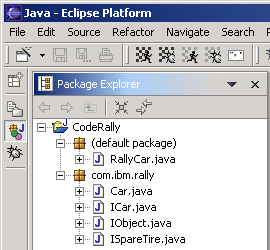
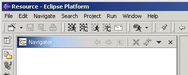

CodeRally Installation Instructions
The sections below describe how to configure a machine with the CodeRally environment.
Prior Installation
Before installing CodeRally, you must have a working Java JRE installed on your machine, and a copy
of the Eclipse v2.1 platform from www.eclipse.org.
Installing the CodeRally Environment
The following steps install the CodeRally game onto your machine as an Eclipse plugin, and initialize your workspace.
- Download CodeRallyPkg.zip.
- Unzip CodeRallyPkg.zip into the [Eclipse install dir]/eclipse/plugins
directory, where [Eclipse install dir]
is the directory in which Eclipse is installed. This should create a new directory called
[Eclipse install dir]/eclipse/plugins/com.ibm.coderally.
- Start Eclipse.
- Select the Window > Preferences... menuitem.
- Select CodeRally from the tree, and then click Create project on the right. Click OK.
- Select the Window > Perspective... menuitem.
- Select Java from the list and click OK.
- Select the Window > Customize Perspective... menuitem.
- Expand the Other section and check the CodeRally option. Click OK.
- You should see a new toolbar containing five CodeRally toolbar buttons, as shown below.


Getting Started
You are now ready to develop a rally car! If you are unfamiliar with the CodeRally environment, take
the following steps to write and test your own rally car:
- Expand the CodeRally project, and the (default package).
- Right click on RallyCar.java and select Open.
- You can now start modifying your rally car. Change the car name and colour. Make changes to the methods
of the RallyCar class as indicated.
- When you are ready to test your car, click on the test button (
 )
on the toolbar.
)
on the toolbar.
- When the CodeRally game appears, select one or more of the samples using the buttons provided. Click OK.
- Once the match is over, you can click on the exit button at the bottom right of the CodeRally screen.